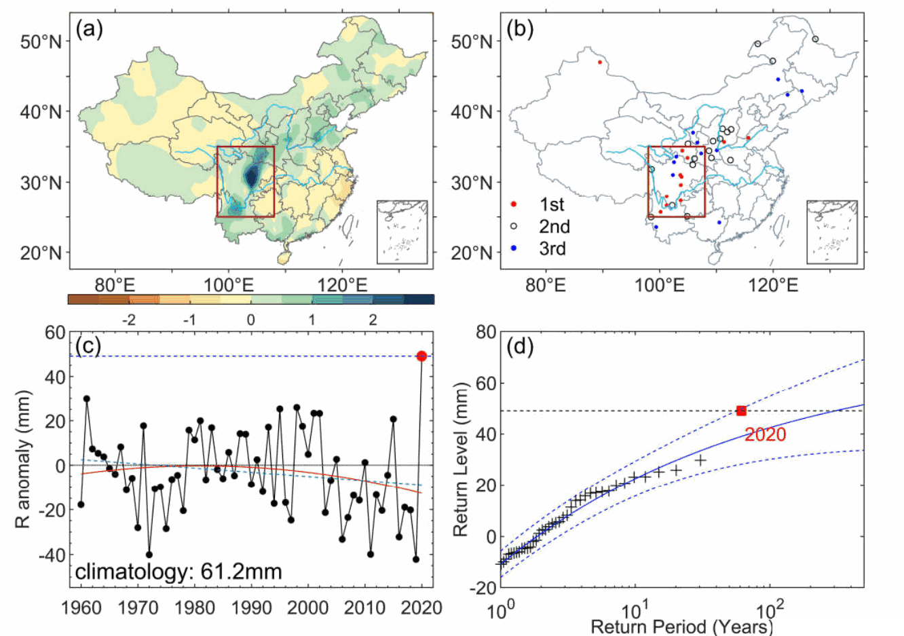
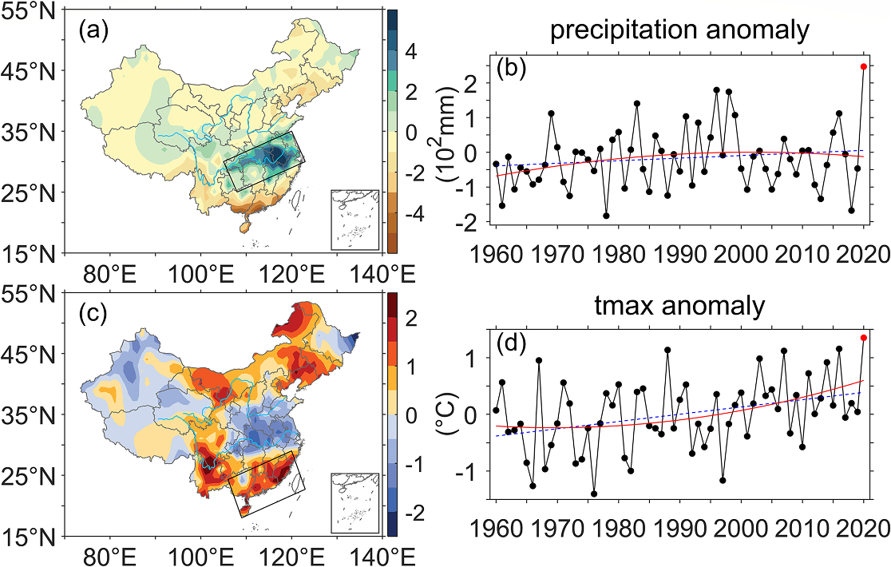

开学了，暑热却还没结束：儿童高温暴露会怎样变化？
这项研究将极端高温归因与儿童暴露结合起来，发现人为气候变化已经让 2024 年秋季开学期间这样的高温更常见、更强，并增加了儿童暴露。未来儿童人口预计减少，高温却会继续增强，两者向不同方向变化，共同决定儿童总暴露的走向。即使人口减少让总暴露下降，仍在当地生活和上学的孩子，也需要面对更频繁、更强的开学季高温。

研究专栏
这项研究将极端高温归因与儿童暴露结合起来，发现人为气候变化已经让 2024 年秋季开学期间这样的高温更常见、更强，并增加了儿童暴露。未来儿童人口预计减少，高温却会继续增强，两者向不同方向变化，共同决定儿童总暴露的走向。即使人口减少让总暴露下降，仍在当地生活和上学的孩子，也需要面对更频繁、更强的开学季高温。
这项研究以 2023 年 12 月中国东部破纪录寒冷事件为例，解释了最暖年份里的这场强寒潮：异常大尺度环流主导了事件本身，而人为气候变化的整体作用是在削弱类似寒潮。CMIP6 分析进一步发现，人为影响会略微增强有利于寒潮的环流，但这股降温作用远小于背景增暖的作用。未来随着持续增暖，类似寒潮总体还会减少；在低排放路径下，全球增暖逐渐趋稳，寒潮减少的趋势也会放缓，并在后期有所回升。

这项研究针对 2023 年端午期间华北破纪录高温开展快速归因，发现人为气候变化已经让这类三日持续高温更常见、也更强：CMIP6 模拟显示，其发生概率约为无人为影响时的 3.6 倍，强度增加约 1.0°C。即使沿着实现碳中和的低排放路径发展，类似事件到本世纪末仍预计比 2023 年更频繁、更强。减排能够明显控制高温的增加，而如何长期适应这样的天气，也需要提前考虑。

这项研究以 2020 年长江中下游破纪录梅雨和华南同期极端高温为例，把两地的极端作为一个整体，建立“故事线—概率”结合归因框架，并发展了构造环流相似方法。结果表明，大尺度环流和人为强迫的热力作用分别贡献了约 51% 和 39% 的事件强度；与无人为影响的气候相比，人为气候变化已使类似空间复合事件的发生概率增至至少约 10 倍。
未来这类事件会变得多常见，很大程度上取决于排放路径。相对于 2001—2020 年气候，高排放情景下，本世纪中叶和末期的发生概率预计分别达到约 10 倍和 14 倍；低排放路径下，这两个时期都约为 7 倍，明显低于高排放下的增幅。

这项研究以 2020 年 8 月西南地区破纪录持续暴雨为例，从“这次事件为什么这么强”和“人为活动是否改变了类似事件的风险”两个角度开展归因。结果表明，异常大尺度环流可以解释约 47% 的事件强度，而人为强迫已使达到或超过这次暴雨强度的事件发生概率增至无人为影响时的约 2.4 倍。更值得注意的是，风险上升并不是因为当地平均降水持续增多，而主要与降水变率增大有关，也就是不同年份之间的降水起伏变大了。即使长期趋势并不明显，极端暴雨仍可能变得更容易发生。

2020 年梅雨季，长江中下游暴雨不断，华南却持续高温。看上去很不一样的两场极端天气，背后伴随一套共同的大尺度环流。这项研究想弄清楚：大尺度大气环流本身起了多大作用？如果环流形势差不多，变化中的气候背景又会带来什么影响？
结果发现，环流能解释约 71% 的降水异常，却只能解释约 44% 的高温异常。而当类似环流出现在较暖的气候背景中，两类事件都更容易达到极端，尤其是高温。
